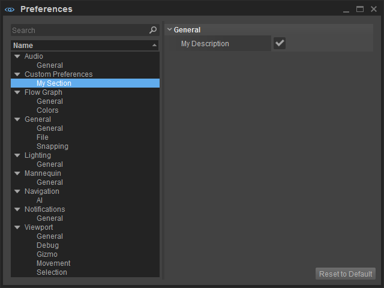

Preferences and Settings
Note: Make as little changes as necessary. Too much customization and options is not necessarily a good thing and quickly becomes confusing and off-putting to the user. Our tools are already extremely complex, and customization makes them harder to work on, harder to share knowledge, harder to design, etc...
Before adding a new setting, please consider if this could not be handled better by Personalization, or if a solution without settings is possible.
1 2 3 4 5 6 7 8 9 10 11 12 13 14 15 16 17 18 19 20 21 22 23 24 25 26 27 28 29 30 31 32 33 34 | #include <EditorFramework/Preferences.h> // EditorCommon struct SMyCustomPreferences : public SPreferencePage{ SMyCustomPreferences() : SPreferencePage("Custom Preferences", "General/General") // Create a section called Custom Preferences within General/General in preferences , bMyProperty(true) { } bool Serialize(yasli::Archive& ar) { ar.openBlock("general", "General"); ar(bMyProperty, "bMyProperty", "My Description"); ar.closeBlock(); return true; } bool bMyProperty;}; SMyCustomPreferences gMyCustomPreferences;REGISTER_PREFERENCES_PAGE_PTR(SMyCustomPreferences, &gMyCustomPreferences) // My user codevoid DoSomething(){ if (gMyCustomPreferences.bMyProperty) { // Do Something gMyCustomPreferences.bMyProperty = !gMyCustomPreferences.bMyProperty; }} |
